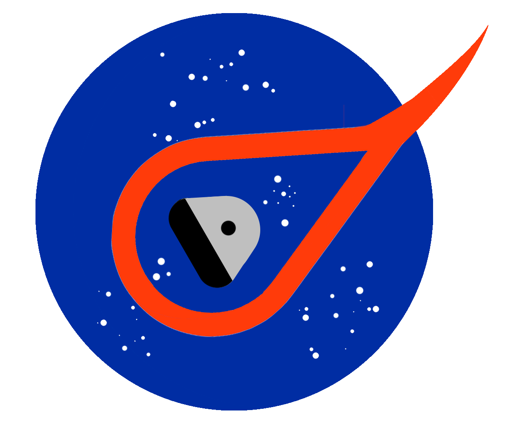

Quick Start
arcjetCV
User Manual
Introduction
Calibration
Processing
Post-Processing
Tutorial
arcjetCV Tutorial
arcjetCV
arcjetCV.segmentation package
View page source
arcjetCV.segmentation package
Subpackages
arcjetCV.segmentation.contour package
Submodules
arcjetCV.segmentation.contour.cnn module
arcjetCV.segmentation.contour.contour module
Module contents
arcjetCV.segmentation.time package
Submodules
arcjetCV.segmentation.time.time_segmentation module
Module contents
Module contents